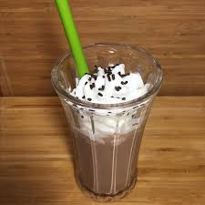

Poor Man's Milkshake

Description
This milkshake will burn off as many calories as you consume. You'll pump those triceps up grinding the ice cream down into a slurpable paste.
Ingredients
- Vanilla Bean Ice Cream
- Non-Dairy Milk of your choice
- Chocolate Syrup
- Whipped Cream
Directions
- Start scooping that ice cream into the largest vessel you own. You're going to overestimate the ice cream:milk ratio. It should be 90:10
- Add the chocolate syrup. This is to taste. Live a little.
- Now slowly pour in your non-dairy milk. It will seem full immediately, but give it some time to percolate to the bottom.
- Before you dive right in to the mixing stage, remember Archimedes and his law of buoyancy. If you just hammer that spoon right in there, the overflowing mess will put a damper on the night. Gentle. Slow. Deliberate.
- You will soon realize that this concoction is simply to viscous to enjoy with a straw. So simply place the aforementioned straw into the recycling bin, and reappropriate your mixing spoon into a consumption spoon.
- Add whipped cream if you like, you're a grown man/woman who answers to no one.